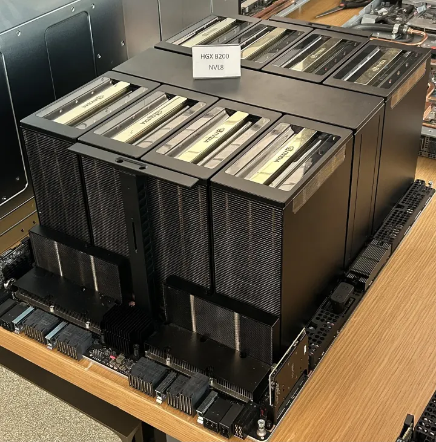
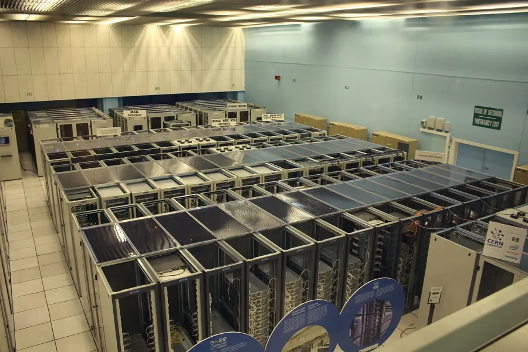
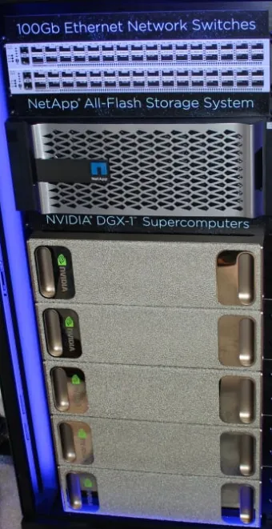

Cluster anatomy: nodes, GPUs, networks and storage tiers
The idea in one screen
A GPU cluster is a staircase: each level up (GPU, server, rack, pod, cluster) multiplies the GPUs a job can reach and divides the bandwidth between them, so where a job's traffic lands on the staircase, and which of four separate networks each byte rides, decides how fast it runs.
Fig. 1 climbs the staircase on Meta's Llama 3 cluster of 24,576 H100s, the best documented large training cluster (Llama 3 report, section 3.3.1) published, from one GPU out to the whole hall. Each step adds a level: more GPUs within reach, less bandwidth from one GPU to another at that distance, one direction.
- One GPU: 3,350 GB/s to its own memory. An H100's HBM3, stacked beside the die: the top of the staircase, with 1 GPU within reach.
- One server: 8 GPUs on NVLink, 450 GB/s each way. The tray slides out of its rack: eight GPUs share the NVSwitch chips, so any pair talks at about a seventh of memory speed without touching a network switch. Llama 3 keeps tensor parallelism of 8 inside this box.
- One rack: 16 GPUs, 50 GB/s through 1 switch. Two servers behind a rack switch (RTSW, the leaf). Each GPU leaves the server through its own 400 Gb/s RoCE card: 50 GB/s, a ninth of NVLink.
- One pod (AI zone): 3,072 GPUs, still 50 GB/s, 3 switches. 192 racks (drawn here as 12) under cluster switches (CTSW) with full bisection: any GPU reaches any other in the pod at its card's full speed, at the cost of more hops.
- The cluster: 24,576 GPUs, 7 GB/s when a whole pod crosses. 8 pods joined by aggregation switches (ATSW) at 1:7. A message between pods crosses 5 switches, and when every GPU of a pod crosses at once each gets 50 / 7 = 7.14 GB/s derived. So the scheduler keeps jobs inside a pod (section 4).
Drawn small: racks, pods and switch counts are illustrative; the numbers are Meta's. Dots stream along the links each step is about, closer together where the bandwidth is higher (log scale).
You need: what tensor and data parallelism are (Distributed training). How each link works (PCIe, NVLink, InfiniBand and RoCE, fat trees, the all-reduce algorithms) is taught on Interconnects and scaling; watts, cooling and failure rates on Power, cooling and reliability. This page uses their numbers, so the pages agree, and asks what is in the box, how boxes are grouped, which network each byte travels on, and how a job lands on all of it.
- Node
- one server: one operating system, its CPUs and memory, usually 8 GPUs.
- Rank
- one training process, normally one per GPU.
- Scale-up domain
- the GPUs joined by memory-speed links (NVLink): 8 in a server, 72 in an NVL72 rack.
- Compute fabric
- the scale-out network between nodes, one NIC per GPU (also back-end, east-west).
- Front-end, OOB
- the ordinary Ethernet for logins, the scheduler and images; the out-of-band network to each node's BMC.
- NUMA node
- one CPU socket and its memory; a two-socket server has two.
- Pod, scalable unit
- the block of racks designed once and copied, full bandwidth inside.
- Oversubscription
- fewer uplinks than downlinks at a switch layer (1:7), so not everyone can cross at full speed at once.
- Login node, controller
- where people work and submit; the head node that runs the scheduler and tracks every node and job.
Labels: published an operator describing its own cluster (authors for a paper), vendor a company describing what it sells, derived computed here with the formula shown, measured run here (Apple M1 Pro, Docker Desktop VM, 2026-10-16), unconfirmed when no primary source confirms it.
Every level up: more GPUs within reach, less bandwidth to each
Meta's Llama 3 cluster of 24,576 H100s (Llama 3 report, section 3.3.1) published, bandwidth one GPU gets to another at that distance, one direction, log scale. Memory 3,350 GB/s, NVLink 450, the network card 50, and 7 when a whole pod crosses the 1:7 top layer at once derived (50 / 7). Click a row for its section; the Cluster explorer draws the same ladder for four designs.
1. Inside one node: the parts list
A GPU server has many more parts than "8 GPUs", and each is a place where a job can be slow or broken: a GPU on the wrong CPU socket, a network card that is not the one next to its GPU, a disk that vanishes with the node. The reference is NVIDIA's DGX H100, the most fully documented 8-GPU server; most HGX servers from other builders (Meta's Grand Teton, Dell, Supermicro) use the same 8-GPU board and a similar layout (DGX H100 user guide) vendor.
| Part | DGX H100 | What it is for |
|---|---|---|
| GPUs | 8 x H100, 640 GB of HBM3 in all | the arithmetic; their memory holds weights, optimiser state and activations |
| NVSwitch | 4th-gen NVLink, "900 GB/s GPU-to-GPU bandwidth" (450 each way) | every GPU reaches every other at full NVLink speed: the scale-up network (section 2) |
| CPUs | 2 x Xeon 8480C, 56 cores each | each rank's Python process, data loader workers, kernel launches; two sockets mean two NUMA nodes |
| Memory | 2 TB of DRAM in 32 DIMMs | data loader buffers, pinned memory for copies to the GPU, the page cache, CPU-offloaded optimiser state |
| Compute NICs | 8 x ConnectX-7 single port, up to 400 Gb/s, InfiniBand by default | one per GPU: the compute fabric between nodes (section 3) |
| Storage / management NICs | 2 x ConnectX-7 dual port, Ethernet by default | the storage network and in-band management: datasets, checkpoints, logins, container pulls |
| Management ports | dual 100 GbE + 10 GbE; a 1 GbE port for the BMC | the BMC (baseboard management controller) is a small computer on the board that can power-cycle the node, read sensors and show its console even when the operating system is dead |
| Local disks | 2 x 1.92 TB NVMe (OS, mirrored); 8 x 3.84 TB NVMe "data cache" in RAID 0 (30.72 TB) | a scratch tier for staged datasets and a first copy of a checkpoint; RAID 0 means one dead disk loses all of it, and it is gone if the node is (section 5) |
| Power | 6 x 3.3 kW supplies, 4+2 redundant; 10.2 kW max | eight 700 W GPUs are only about 55% of it; the power page explains the rest |

The PCIe tree and NUMA: why "which GPU" matters inside one box
PCIe is the bus every device hangs from (taught on the interconnects page). In an 8-GPU server it is a tree: each CPU socket has PCIe lanes, under each socket sit PCIe switches, and under each switch (typically) two GPUs, their two network cards and some NVMe drives. Two consequences:
- GPU and NIC pairs. When GPU 3 sends to another node, the fastest path is the NIC under the same PCIe switch: GPU to switch to NIC, never touching the CPU (GPUDirect RDMA). A NIC under the other socket means crossing the link between the two CPUs. NCCL reads the tree, pairs each GPU with its nearest NIC, and names the distances
PIX(same PCIe switch),PXB(several PCIe switches),PHB(through the CPU, same NUMA node) andSYS("crossing the SMP interconnect (e.g. QPI/UPI)") (NCCL environment variables) docs. - NUMA. Each socket's memory is near its own cores and far from the other's. A rank whose process runs on socket 1 while its GPU hangs under socket 0 copies every batch across the inter-socket link. The fix is CPU affinity: Slurm's
--gpu-bindand--cpu-bind, Kubernetes' Topology Manager, ornumactlin the launch script (switches on Slurm and Kubernetes for ML; pinning from the operating system side on Scheduling and CPU time).
nvidia-smi topo -m before writing the launch script (section 7).Each GPU hangs under a PCIe switch with its own network card
DGX H100, schematic, not to scale. Click a part. The GPU and NIC pairing under a shared PCIe switch is how HGX boards are built; the guide lists the parts, not the wiring, so check a real node with nvidia-smi topo -m (section 7).
2. The scale-up domain: how many GPUs share NVLink
The scale-up domain (NVIDIA: NVLink domain) is the set of GPUs joined by memory-speed links, so any of them can read another's memory at hundreds of GB/s. Outside it, GPUs talk through network cards at about a ninth of that (450 against 50 GB/s each way for an H100 and a 400 Gb/s card derived). Why tensor and expert parallelism must stay inside the domain is on the interconnects page; here the question is what the domain's size does to a cluster.
| System | GPUs in one domain | Joined by | Label |
|---|---|---|---|
| HGX / DGX H100 or B200 server | 8 | NVLink 4 / 5 via NVSwitch | source vendor |
| GB200 / GB300 NVL72 rack | 72 | NVLink 5 via 9 switch trays | source vendor |
| AWS Trn2 UltraServer | 64 | NeuronLink across 4 servers of 16 chips | source operator |
| Fire-Flyer 2 PCIe node | 8 | PCIe (NVLink bridges pair GPUs) | source authors |
When the domain is a rack. With 8-GPU servers, the node is both the unit the scheduler hands out and the whole scale-up domain; here the domain is the rack, and three things change:
- The scheduler must know which trays share a rack. Eight trays in one rack form a 32-GPU NVLink group; eight trays in eight racks do not. Slurm describes this with its topology plugins (
topology/treefor switch trees,topology/blockfor blocks such as NVLink racks: Slurm topology guide), Kueue with Topology Aware Scheduling; the parent's Scheduling lab runs topology-aware placement on its toy clusters. - The rack is the unit of power and cooling: about 120 kW, liquid-cooled (same guide), against 10.2 kW for an air-cooled DGX H100 (section 6).
- The rack is a unit of failure. A tray can be swapped, but the switch trays serve all 72 GPUs; how operators handle a partly broken rack is on Power, cooling and reliability and Fault tolerance at scale.

3. Four networks, the control nodes, and how a job lands
A cluster moves very different traffic: gradients between GPUs (huge, bursty, every step, and the step waits for them), training data and checkpoints (large), logins, job submissions and container images (small, many), and the power-cycle command for a node whose operating system is dead. On one network a checkpoint burst slows the gradients, and a broken switch takes away the only way to reach a hung node. So NVIDIA's DGX SuperPOD reference design separates them: "DGX SuperPOD configurations utilize four network fabrics" (SuperPOD network fabrics) vendor, plus the NVLink inside each node:
- Compute fabric (back-end, east-west, scale-out): one 400 Gb/s port per GPU, InfiniBand or RoCE, rail-optimised. Only GPU-to-GPU traffic: the job's collectives. A container sees none of these cards unless they are passed in; how a Kubernetes pod gets its RDMA card and a fabric interface (Multus, SR-IOV) is Kubernetes for ML, section 5.
- Storage fabric: the two dual-port cards per node to the shared file system. NVIDIA asks that "the I/O per-node for the DGX SuperPOD must exceed 40 GBps", with the node side "slightly oversubscribed with a ratio near 4:3".
- In-band management (the front-end): ordinary Ethernet to the login nodes, the scheduler (Slurm, Kubernetes, Run:ai in NVIDIA's list), NFS home directories and outside services such as container registries.
- Out-of-band management (OOB): 1 GbE to "the management ports of all devices including DGX and management servers, storage, networking gear, rack PDUs": the BMCs, so a hung node can be power-cycled.
The control nodes. Besides the GPU nodes, a cluster has a few ordinary servers that run it. "The DGX SuperPOD architecture is a combination of DGX systems, InfiniBand and Ethernet networking, management nodes, and storage", with a management rack of "networking switches, management servers, storage arrays, and UFM appliances" (UFM is the InfiniBand fabric manager) (SuperPOD architecture) vendor. What runs on them: login nodes, where people ssh in (through a bastion, with keys, multiplexing and tunnels: SSH, section 13), edit, build and submit, never train; the controller or head node, which runs the scheduler and holds the state of every node and job (Slurm's slurmctld, Kubernetes' API server and scheduler, Ray's head node; the daemons are taught on Slurm); and service nodes for provisioning, monitoring and the fabric manager. They sit on the front-end, and the scheduler is a layer on top of the hardware: it only knows the shape it is told.
Fig. 2 follows one 16-GPU job on two 8-GPU nodes through a cluster laid out as NVIDIA's SuperPOD (schematic): each step lights the machines that take part and streams dots along the network that carries the traffic, coloured front-end, compute fabric, storage fabric, out-of-band and NVLink.
- The cluster at rest. A login node and the controller on the front-end; two GPU nodes, each with 8 GPUs on NVLink, its NICs, local NVMe and a BMC; a leaf switch of the compute fabric; the storage servers; every BMC on the out-of-band network.
- Submit (front-end). You ssh to a login node and run
sbatch --nodes=2 --gpus-per-node=8 train.sh; the request goes to the controller, which queues it. - Place (front-end). The scheduler picks two free nodes, under one leaf if it has been told the topology (section 4), and tells
slurmdon each to start the job. - Pull and stage (front-end, storage). Each node pulls the container image from a registry over the front-end (thousands of nodes pulling one image at once is its own storm) and stages the dataset from shared storage to local NVMe.
- Launch (inside each node).
slurmdstarts 8 ranks per node, one per GPU, each bound to the CPU socket its GPU and NIC hang under (section 1). - Bootstrap (front-end). Before NCCL opens its RDMA connections, ranks exchange addresses over plain TCP on the interface
NCCL_SOCKET_IFNAMEselects. A job whose ranks cannot reach each other on the front-end hangs here although the compute fabric is fine (Launching distributed training covers bootstrap in section 6 and its hangs in section 8). - Train (NVLink, compute fabric). Tensor-parallel all-reduces stay inside each server on NVLink; the gradient all-reduce between the nodes goes from each GPU to its own NIC, through the leaf, over RDMA. The step waits on it.
- Read and checkpoint (storage). Batches come from local NVMe or the parallel file system; every so often all 16 ranks write a checkpoint at once, a burst (section 5). On Meta's clusters this rides the front-end; Fire-Flyer 2 sends it over the compute fabric on its own virtual lane.
- Watch and recover (front-end, out-of-band).
slurmdandkubeletheartbeat to the controller, which declares a node dead when they stop (the parent's Failure lab); a hung node is power-cycled through its BMC over the out-of-band network, which works when the operating system does not.
The commands are Slurm's; on Kubernetes the API server, the scheduler and the kubelet play the same parts.
Not everyone splits the networks the same way: Meta, DeepSeek and NVIDIA compared (under 1 min)
Meta's RoCE clusters have two: "the frontend (FE) network for tasks such as data ingestion, checkpointing, and logging", and the backend, "a specialized fabric that connects all RDMA NICs in a non-blocking architecture" (Meta engineering, Aug 5 2024) published: storage rides the front-end. DeepSeek's Fire-Flyer 2 goes the other way: each node has a single 200 Gb/s InfiniBand card, and its storage servers sit on the same fabric, "each storage server equipped with two IB NICs, respectively connected to different zones" (Fire-Flyer 2, section III) authors, so gradients and checkpoints share one network, kept apart with InfiniBand service levels mapped to virtual lanes so that "flows in distinct lanes do not interfere with each other" (section VI-A1). Three designs, three answers: every separate network costs cables, switches and ports; merging them costs interference.
4. From rack to cluster: the levels and why placement matters
Rack. A steel frame with shared power feeds and, often, a switch at the top (top-of-rack, ToR). How many GPUs go in one is decided mostly by watts and cooling (section 6): Meta's Llama 3 cluster puts 16 GPUs (two servers) behind each rack switch (Llama 3, section 3.3.1) published; NVIDIA's B200 SuperPOD puts "two DGX B200 systems per rack" (SuperPOD components) vendor; an NVL72 is one rack of 72.
Pod, or scalable unit. The block designed once and copied: racks whose GPUs reach each other at full NIC speed. NVIDIA's scalable unit (SU) is 32 DGX nodes with 8 leaf switches, one per rail (SuperPOD network fabrics); in its tables one DGX system is removed "to accommodate for UFM connectivity", which is why 4 SUs hold 127 nodes and 1,016 GPUs, not 1,024. Meta's pod (also called an AI zone) is 192 racks, 3,072 GPUs, with "full bisection bandwidth" inside (Llama 3 report). How leaves and spines are wired and what rail-optimised means is section 6 of the interconnects page.
Cluster. Pods joined by a top layer of switches, usually oversubscribed. Meta's 8 pods are joined at 1:7; the "cross-AI Zone connectivity is oversubscribed by design", and "the job scheduler tries to minimize cross-zone traffic" (Meta engineering, Aug 5 2024) published.
How big can each level be? Set by switch ports. With switches of k ports, a two-layer fat tree reaches k2/2 network cards and a three-layer one k3/4 (Al-Fares et al. 2008): 2,048 and 65,536 with 64-port switches derived. The arithmetic reproduces published designs: DeepSeek's Fire-Flyer 2 used 40-port QM8700 switches, and 402/2 = 800 is exactly its "800-port Fat-Tree" "configured with 20 spine switches and 40 leaf switches" authors; NVIDIA's 4-SU SuperPOD has 32 leaves and 16 spines, which the Sizing calculator gets from the same formula.

Which switches one message crosses
The levels decide what a single message crosses. Pick two routes in the widget beside this paragraph and compare them: inside a node a message never meets a network switch; across pods it crosses five, and the shared top layer sets its speed. Predict first: which hop is slowest on the cross-pod route, and does it change at 1:1? Then step through the hops; both routes move at once, and the counters under the drawing give each route's switches, slowest hop, latency and time for 1 GB.
Rail-optimised fabric of 8-GPU H100 servers, one 400 Gb/s NIC per GPU. Bandwidth per hop, one direction: NVLink 4 450 GB/s, PCIe 5.0 x16 about 63, NIC and leaf-spine links 50, pod-to-core 50 / oversubscription when every GPU crosses at once derived. Small-message latency: NVLink 3.33 µs, InfiniBand 2.8 µs within a leaf, 3.7 µs across leaves (Zhao et al. 2025, Table 5) authors; none is published for the PXN and cross-pod routes. Time for 1 GB = latency + 1 GB / slowest hop. PXN is NCCL moving data over NVLink to the GPU whose NIC sits on the destination's rail. How collectives combine such messages is the interconnects page's Collective simulator.
One message, hop by hop: inside a node it never meets a network switch; across pods it crosses five
The same 16-GPU job, placed two ways
Fig. 3 places one data-parallel job of 16 GPUs on a cluster shaped like Llama 3's, drawn small: 2 pods of 4 racks, 2 servers of 8 GPUs per rack (the real pods have 192 racks). The job runs one ring all-reduce of 1 GB (gradients of about 0.5B parameters in bf16). Switches crossed per ring edge: 0 inside a server (NVLink), 1 inside a rack, 3 between racks of one pod, 5 between pods; the ring's arcs rise as high as the switch layer they cross. Predict first: on an idle cluster, is the spread job slower than the packed one?
- The cluster. Two pods of four racks, two 8-GPU servers per rack, a rack switch on each rack, a pod layer above each pod and the shared top layer over both.
- Place: 2 servers, 1 rack, 1 pod. The scheduler gives the job two whole servers in one rack: 16 GPUs.
- The ring: 14 of its 16 edges are NVLink. Inside each server the ring runs over NVLink; only 2 edges cross the rack switch, so a trip round the ring crosses 2 switches.
- Idle cluster: 37.5 ms. Each GPU sends 2 x 15/16 of 1 GB, limited by its own 50 GB/s card derived.
- Busy cluster: still 37.5 ms. Other jobs (grey) fill the rest of the cluster and stream over the top layer, but the packed job never touches the shared layers.
- The cluster. Two pods of four racks, two 8-GPU servers per rack, a rack switch on each rack, a pod layer above each pod and the shared top layer over both.
- Place: 16 servers, 8 racks, 2 pods. The scheduler gives the job one free GPU on each of 16 servers.
- The ring: every edge leaves a server. 8 edges stay in a rack, 6 cross racks inside a pod, 2 cross between pods: 36 switches per trip round the ring against 2.
- Idle cluster: the same 37.5 ms. On an idle cluster both placements take the same 37.5 ms in this model, because each GPU's own 50 GB/s card is the limit either way.
- Busy cluster: 262.5 ms, seven times slower. The spread job's two cross-pod edges share the 1:7 top layer with every other job: 50 / 7 = 7.14 GB/s each, and the ring runs at the pace of its slowest edge derived.
Time is the bandwidth term only, 2(N-1)/N x 1 GB / slowest edge derived: latency per hop and congestion are left out, so real gaps are larger.
The spread job also pays latency on each of its 36 switches, and depends on 8 racks and 2 pods being healthy instead of one rack. That is why schedulers pack: Slurm's topology/tree plugin and --switches option, Kueue's Topology Aware Scheduling, and DeepSeek's HAI platform, which allows "cross-zone computing tasks" to be "limited to one at most" (Fire-Flyer 2, section III-B) authors. Scattered placement costs little on an idle network and a lot on a busy one, so the same job is fast one day and slow the next. Packing has its own cost: waiting for 2 whole nodes in one rack takes longer than taking any 16 free GPUs, the trade-off the parent's Scheduling lab measures.
5. Storage tiers at cluster level
Training data and checkpoints are far larger than any GPU's memory, and the storage every node can see is far slower than the storage inside one node. So a cluster has a ladder of tiers, each bigger, slower and longer-lived than the one above; the infrastructure's job is to keep the GPUs fed from the top while the truth lives at the bottom.
Fig. 4 puts the tiers on one scalable unit of NVIDIA's SuperPOD (32 nodes, two per rack) and sends a training job's data through them. Box sizes are not to scale; the numbers are the sources' own.
- Inside one node: three tiers. GPU memory, 8 x 80 GB = 640 GB at 3.35 TB/s per GPU; host DRAM, 2 TB, reached over PCIe 5.0 x16 at about 63 GB/s each way per GPU; local NVMe, 30.72 TB in RAID 0, whose bandwidth the guide does not give. Each is bigger and slower than the one above, and the NVMe is lost with the node.
- The shared file system: 32 nodes, one pipe. Each node can read faster than 40 GB/s; the standard tier gives all 32 together 40 GB/s of read. When they all read at once, each gets 40 / 32 = 1.25 GB/s derived.
- Object storage: where the data lives for years. Tens to hundreds of PB behind the file system. Meta's Tectonic for Llama 3 (a different cluster, drawn here for scale): 240 PB on 7,500 SSD servers, 2 TB/s sustained and 7 TB/s peak for the whole cluster.
- Stage once, read many times. The dataset comes down the ladder once, from the object store through the file system to each node's NVMe; every later epoch reads it locally, so the shared tiers carry the average, not every read.
- Checkpoint: every GPU writes at once. All ranks write together, a burst towards the file system, whose write is "at least ½ of the read performance": 20 GB/s per 32 nodes on the standard tier derived. Written straight there, the GPUs wait for the slowest pipe.
- Write near, drain far. The checkpoint lands first in host memory or local NVMe at node speed, training resumes, and the copy drains to the shared file system in the background.
| Tier | Capacity | Bandwidth | Lives for | Source |
|---|---|---|---|---|
| GPU memory (HBM3) | 8 x 80 GB = 640 GB | 3.35 TB/s per GPU | this step | source vendor |
| Host memory (DRAM) | 2 TB | PCIe 5.0 x16 to each GPU, about 63 GB/s each way | this job; page cache | source vendor |
| Local NVMe (data cache) | 8 x 3.84 TB = 30.72 TB, RAID 0 | not given in the guide | this job or node (lost if the node dies) | source vendor |
| Shared high-performance file system | PBs | SuperPOD guidance: 40 to 125 GB/s read per 32 nodes | the project | source vendor |
| Object storage / data lake | tens to hundreds of PB | Llama 3's Tectonic: 2 TB/s sustained, 7 TB/s peak for the cluster | years | source operator |
Per node against the whole cluster. NVIDIA asks that each SuperPOD node can read faster than 40 GB/s, and sizes the shared file system at 40 GB/s of read per 32-node SU in its standard tier, 125 GB/s in the enhanced one, with write "at least ½ of the read performance" (SuperPOD storage guidance, Tables 5 and 6) vendor. Put together: 32 nodes each able to pull 40 GB/s could ask for 1,280 GB/s, and the standard tier gives 40, so only one node in 32 can read at its peak at a time derived. Storage is sized for the average plus bursts; the local NVMe absorbs the difference: stage the dataset once, read it many times locally.
Real examples: Llama 3's Tectonic, 240 PB on 7,500 SSD servers, 2 TB/s sustained and 7 TB/s peak; Fire-Flyer 2's 3FS, 180 storage nodes, 8 TB/s of read on the compute fabric; AI2's Jupiter on WEKA (section 8). Formats, shards and data loaders are on Storage and loading at scale; the page cache and fsync on Storage and file systems.

6. Power and cooling: the limit that shapes the rest
Every level above is drawn around watts. Power decides how many GPUs share a rack, which decides how many share a rack switch or an NVLink domain, which decides what "packed" can mean for your job. The physics (power delivery, PUE, air against liquid, the per-gigawatt view) is on the power page; the cluster-level facts:
| Unit | Power | What it forces |
|---|---|---|
| DGX H100 (8 GPUs) | 10.2 kW max (user guide) vendor | four in one rack would be 40.8 kW derived; Meta's Llama 3 racks hold two servers |
| DGX B200 (8 GPUs) | about 14.3 kW max (DGX B200) vendor | NVIDIA's SuperPOD puts two per rack: 28.6 kW derived; its single-SU layout notes "power consumption per rack exceeds 25 kW" |
| GB200 NVL72 (72 GPUs) | "approximately 120kW", liquid-cooled CPUs and GPUs (DGX GB200 guide) vendor | a 72-GPU NVLink domain is possible only because the rack is dense and liquid-cooled; the building needs coolant loops to every rack |
| Fire-Flyer 2 node (8 PCIe A100) | 2,500 W, against 4,200 W for a DGX-A100 (Table II) authors | about 1,250 nodes: 3.1 MW derived, consistent with the paper's "approximately just over 3 MW" |
At site level, megawatts rather than money usually cap how many GPUs a cluster can have (the power page works the numbers): a 24,576-GPU cluster at 10.2 kW per 8 GPUs needs about 31 MW for its servers alone, before network, storage and cooling derived (assuming DGX H100 power for Meta's Grand Teton servers, whose rating is not given in the sources here).
7. Checking a real cluster
What to run on the first day on a new cluster, and what to look for. None of these could run here (no GPUs, no InfiniBand). The parent's Failure lab and Observability and cost cover the health checks that run every day.
| Question | Command | What to look for |
|---|---|---|
| Are GPUs, NICs and NUMA nodes paired as expected? | nvidia-smi topo -m | a matrix of GPUs and NICs: NV# between GPUs (NVLink), PIX between each GPU and its own NIC, and the CPU and NUMA affinity column per GPU, which tells you how to bind ranks |
| Are all NVLinks up? | nvidia-smi nvlink --status | every link at the same speed; one inactive link slows every collective that uses it |
| Are the compute NICs up, at full rate? | ibstat, ibv_devinfo | every port Active, the expected rate (400 for NDR), the expected link layer (InfiniBand, or Ethernet for RoCE) |
| What does the PCIe tree look like? | lspci -tv, lstopo (hwloc) | which GPUs, NICs and NVMe drives share a PCIe switch and a socket; links trained at the right width and generation |
| NUMA layout | numactl -H | two nodes on a two-socket server, with the cores and memory of each |
| What did NCCL pick? | NCCL_DEBUG=INFO, NCCL_TOPO_DUMP_FILE=topo.xml | which transport (NET/IB or NET/Socket), which NIC per GPU; the dumped XML is NCCL's view of the tree (NCCL env) |
| Does the scheduler know the shape? | scontrol show topology, scontrol show node; kubectl get nodes --show-labels | switches or blocks matching the real wiring; declared CPUs, memory and GPUs equal to what the node has |
The last row is the one people skip. Slurm schedules what slurm.conf declares, and slurmd checks only some of it against the hardware. The topic's own toy cluster shows the gap: its "node" c1 (a container in a laptop VM) is declared with 4 CPUs while its cgroup allows 2, and declares 4,000 MB of memory while the kernel kills past 800 MiB; nothing complains measured. Compare scontrol show node with nvidia-smi, lscpu and the cgroup limits.
The toy cluster asked what it is: CPUs, memory, GPUs, NUMA, network, topology, one hop measured (3 min)
The parent page's labs run on a Slurm cluster of three "nodes" (c1, c2, c3), containers inside one Linux VM on a laptop. Asking them what they are is a cheap way to learn the questions to ask of a real node, because here every answer is visibly different. All measured on 2026-10-16 with read-only commands (src/meas/probe.sh; output in src/meas/out/).
| Question | Answer on c1 | Who says so |
|---|---|---|
| How many CPUs? | 1, 5, 2 or 4 | nproc says 1 (it obeys OMP_NUM_THREADS=1, set in the image); lscpu, os.cpu_count() and nproc without that variable say 5 (the whole VM); the cgroup's cpu.max of 200000 100000 allows 2 CPUs' worth of time; Slurm was told 4 |
| How much memory? | 9,951 MiB, 800 MiB or 4,000 MB | /proc/meminfo shows the VM; the cgroup's memory.max (838,860,800 bytes) is the real fence, past which the kernel kills a process; slurm.conf declares RealMemory=4000, and scontrol show node reports FreeMem=5570, read from the VM |
| How many GPUs? | 4 or 0 | Slurm counts gpu:4 backed by four empty files /dev/mi_gpu0..3; there is no /dev/nvidia* and no /sys/class/infiniband |
| NUMA nodes? | none visible | /sys/devices/system/node does not exist in the VM; a DGX H100 has two |
| Network? | one 10 Gb/s "card" | eth0, MTU 1500, reporting speed=10000: a virtual Ethernet pair on Docker's bridge, so the number is a label, not a wire |
| Topology? | none | scontrol show topology prints nothing: no TopologyPlugin is set, so Slurm treats all three nodes as equally close |
$ docker exec mi-slurm-c1 sh -c 'nproc; env -u OMP_NUM_THREADS nproc' 1 5 $ docker exec mi-slurm-c1 sh -c 'cat /sys/fs/cgroup/cpu.max /sys/fs/cgroup/memory.max' 200000 100000 838860800 $ docker exec mi-slurm-ctl scontrol show node c1 (excerpt) NodeName=c1 Arch=aarch64 CoresPerSocket=4 CPUAlloc=0 CPUEfctv=4 CPUTot=4 CPULoad=0.42 Gres=gpu:4 RealMemory=4000 AllocMem=0 FreeMem=5570 Sockets=1 Boards=1 CfgTRES=cpu=4,mem=4000M,billing=5,gres/gpu=4
Real output, 2026-10-16. The node's declared size and its real fence differ; on a real cluster that mismatch is a bug.
One network hop. A 64-byte TCP ping-pong between c1 and c2 took a median round trip of 79 µs (three runs of 2,000: µs), and 69 µs inside one container over loopback measured. A 64-byte transfer over InfiniBand on DeepSeek's cluster took 2.8 µs one way within a leaf (Zhao et al. 2025, Table 5) authors. The toy's "network" is the Linux kernel copying between two containers' sockets: the hop costs about as much as loopback, because both are the same software path. Bulk transfer was 2.3 to 5.1 GB/s across the bridge and about 1.5 GB/s over loopback inside one 2-CPU container, so CPU, not wire, limits it.
What transfers to a real cluster: the questions (CPUs, memory, GPUs, NUMA, NICs, topology, as each layer sees them), the habit of checking the declared size against the real fence, and the fact that Slurm schedules what it is told. What does not: any speed. There is no NVLink, no RDMA, no PCIe tree and no second socket here, which is why the page's bandwidth figures are published or derived, never measured.
8. Depth
Nine published clusters, as their builders describe them, and what each one teaches (4 min)
From 1,024 GPUs to half a million chips. Each row says who described it and when; a vendor describing a customer's cluster is labelled vendor. Sort by clicking a column heading (on a wide screen).
| Cluster | Described | Accelerators | Network | Storage | Label |
|---|
GPU counts as stated; the bar is log-scaled. Llama 3's row and the GenAI row are the same 24K-GPU cluster seen in two documents.
- Meta RSC, 2022: a two-level Clos "that has no oversubscription" for up to 16,000 A100s (760 DGX A100 in phase 1), 175 PB of Pure FlashArray storage; the conservative design, every GPU equal (Meta, Jan 24 2022) published.
- Meta's two 24K clusters, 2024: the same GPU count twice, one on RoCE (Arista 7800 switches) and one on InfiniBand (Quantum-2), both of which "interconnect 400 Gbps endpoints", with storage behind a FUSE API on Tectonic and a parallel NFS from Hammerspace (Meta, Mar 12 2024) published. Llama 3 405B then trained on the RoCE one.
- Llama 3: oversubscription at the top (1:7) plus a scheduler that keeps jobs inside pods (sections 4 and 5).
- Fire-Flyer 2: the cheap end. PCIe A100s with one 200 Gb/s card per 8 GPUs: 3.125 GB/s of network per GPU against 50 for a DGX H100, 16 times less derived, storage on the same fabric, two zones instead of a third switch layer. The abstract claims "reducing costs by half and energy consumption by 40%", while section III-C says "60% of the GPU cost and energy consumption" at about 83% of DGX-A100 GEMM performance authors: the paper's two figures differ, and its storage-node count does too (nearly 200 in III-B, 180 in VI-B2).
- DeepSeek-V3's cluster, 2025: 2,048 H800s on a multi-plane fat tree, GPU-NIC pair k of every node on its own two-layer plane; compared in depth on the interconnects page, with Alibaba's HPN (15K GPUs per pod).
- xAI Colossus: 100,000 Hopper GPUs on Ethernet (Spectrum-X), built "in just 122 days"; NVIDIA claims "95% data throughput" against "only 60%" for standard Ethernet (NVIDIA, Oct 28 2024) vendor: a supplier's claim about its own product, with no independent measurement found.
- AWS Project Rainier: "nearly half a million Trainium2 chips" for Anthropic, over several US data centres: a scale-up domain of 64 chips (UltraServers of 4 servers x 16 on NeuronLink) and EFA between them (Amazon, Oct 29 2025) published. TPUs and Trainium in depth: TPUs and other accelerators.
- AI2 Jupiter: 1,024 H100s with WEKA storage; a cluster the size most labs actually run (OLMo 2, section 6) published.
Common mistakes, with the real error lines (2 min)
NCCL quietly uses TCP sockets instead of InfiniBand. With NCCL_DEBUG=INFO the log says NET/IB : No device found. (NCCL's src/transport/net_ib.cc line 749 at tag v2.27.7-1) and then uses NET/Socket. The job runs, much slower, with no error. Usual causes: a container started without the RDMA devices (/dev/infiniband) or the user-space RDMA libraries. Grep the first job on a new cluster or image for the transport line.
The socket interface name is wrong on some nodes. NET/Socket : no interface found (net_socket.cc line 50, same tag) when NCCL_SOCKET_IFNAME names an interface the node does not have; common when two node types name their Ethernet ports differently. Use a prefix (NCCL_SOCKET_IFNAME=eth) or check every node type.
A declared GPU count with no devices. On this topic's toy cluster a node declared with gpu:4 and no device files went INVAL with gres/gpu count reported lower than configured (0 < 4) measured (the parent's setup), while 4 declared CPUs on a 2-CPU cgroup passed silently (section 7).
Asking the container how many CPUs it has. nproc printed 1 because of OMP_NUM_THREADS; os.cpu_count() printed the whole VM's 5; the cgroup allowed 2 measured. A data loader that starts os.cpu_count() workers in a container limited to a few CPUs oversubscribes them. Read the cgroup (cpu.max) or the scheduler's variables (SLURM_CPUS_PER_TASK).
Reading a vendor's "900 GB/s" as one direction. NVLink 4's "900 GB/s" adds both directions: 450 GB/s each way. The same for NVL72's "130 TB/s". Network cards are quoted per direction (400 Gb/s = 50 GB/s each way). Mix them and NVLink looks 18 times faster than the network instead of 9.
Sizing power from the GPUs. GPUs are only about 55% of a DGX H100's 10.2 kW, so a plan from GPU watts is short by almost half.
Interview rehearsal: five design questions (3 min)
How many 64-port switches does a non-blocking, rail-optimised fabric for 1,024 GPUs (128 nodes) need? It fits in two layers (642/2 = 2,048 ports). Each leaf has 32 ports down and 32 up; 8 rails x ceil(128/32) = 32 leaves; their 1,024 uplinks need 1,024/64 = 16 spines: 48 switches, 1,024 node cables and 1,024 leaf-spine cables. The same arithmetic gives NVIDIA's published 32 leaves and 16 spines for 127 nodes; the Sizing calculator does it for any size.
Why would anyone oversubscribe the top layer of a training network? Because most jobs are smaller than a pod and the top layer is expensive. Alibaba reports about 96.3% of its training jobs use under 1K GPUs (see the interconnects page). Meta joins 3,072-GPU pods at 1:7 and has the scheduler keep jobs inside a pod; data parallelism across pods still works because its traffic overlaps with compute.
The same job is fast on Monday and slow on Tuesday. What cluster-level causes do you check? Placement (spread across racks or pods: compare scontrol show job node lists), other jobs sharing an oversubscribed layer, a NIC or link that came up at lower speed or a NCCL fallback to sockets (grep the NCCL INFO transport line), a node with a failing GPU or NVLink (a straggler), storage contention from someone else's checkpoint, and rank binding on the wrong NUMA node after an image change.
A colleague says "the cluster has 400 Gb/s networking, so the all-reduce gets 400 Gb/s". What do you ask? Per GPU or per node (Fire-Flyer 2 has 200 Gb/s per node, 25 Gb/s per GPU)? Per direction or both? Through how many switch layers, and is any oversubscribed? Is NCCL actually using RDMA, and the NIC next to each GPU? How far apart did the scheduler place the ranks?
Design the hardware for a 1,000-GPU training lab. Shape: 128 HGX nodes (H100 or B200), 1,024 GPUs: two-layer rail-optimised fat tree, InfiniBand or RoCE, 400 Gb/s per GPU, non-blocking: 32 leaves and 16 spines of 64 ports. A separate storage fabric sized at about 160 GB/s read and 80 GB/s write (NVIDIA's standard tier for 4 SUs), so a 4 GB-per-GPU checkpoint drains in about 51 s, and checkpoints go to host memory or local NVMe first. A front-end Ethernet for logins, the scheduler and registries; an out-of-band network to every BMC and PDU. Power: 128 x 10.2 kW = 1.31 MW of server power for H100 nodes (1.83 MW for B200), about 1.7 MW at a PUE of 1.3 derived; at 40 kW per rack, 3 H100 nodes per rack, 43 racks. Operations: topology-aware scheduling (Slurm topology/tree or Kueue TAS), a few spare nodes, health checks before a node takes jobs, and NCCL transport checks in the first job of every image. Trade-offs to say out loud: RoCE against InfiniBand (cost and vendors against tuning), one storage network or two, NVL72 racks (bigger scale-up domain, liquid cooling, rack-level failures) against 8-GPU servers.
Cluster explorer
Four published designs, level by level. Pick a design, then a level: the drawing shows what that level is made of (click a part to go down a level), and the bar is the bandwidth one GPU gets to another GPU at that distance, one direction, on a log scale. Every figure is from the design's own documents, labelled; derived values say so.
The four designs side by side
Per-GPU bandwidth, GB/s each way, at each distance. Read across a row: how far each design lets a job spread before its bandwidth drops.
Not drawn to physical scale. The drawings are schematic counts (how many of the level below make one of this level; the number in each box is its GPUs), not floor plans. Llama 3's cluster-level 7.14 GB/s is 50 / 7, the worst case when every GPU of a pod crosses the 1:7 top layer at once ; on an idle network a single job gets the full 50. Fire-Flyer 2 does not state the bandwidth between its two zones.
Sizing calculator
From a GPU count to nodes, network switches, cables, racks, power and shared-storage bandwidth, with the fat-tree arithmetic of section 4: switches of k ports; each leaf uses half its ports down, half up; two layers while the network cards fit in k2/2, otherwise three, with the chosen oversubscription where the pods meet the top layer. Rail-optimised means one leaf per GPU index (rail) in every group of k/2 nodes. Start from a preset: three of them are published designs, and the line under the results says whether the formula reproduces their switch counts.
Every preset, computed against published
What the model leaves out: management, storage and out-of-band networks (NVIDIA's 4-SU SuperPOD adds separate storage and management switches), the fabric manager's own ports, spare ports for growth, switch and cooling power, and modular (chassis) switches whose radix is far above 144. Storage bandwidth follows NVIDIA's SuperPOD guidance per 32 nodes (storage guidance), write half of read. Power is node maximum power times nodes; site power multiplies by PUE. All outputs derived.
Further reading
Times: knowledge-base pages, the Reading tab at 230 words a minute, closed details not counted; outside resources, an estimate for the part worth reading. Labels: operator an organisation describing its own cluster (authors for a paper), vendor a company describing what it sells, docs reference documentation. Links checked 2026-10-16.
This page's tabs
Four designs (SuperPOD B200, GB200 NVL72, Llama 3's cluster, Fire-Flyer 2) level by level, with the bandwidth at each distance. 5 min
GPUs to nodes, switches, cables, racks, megawatts and storage bandwidth; presets checked against NVIDIA's and DeepSeek's published counts. 10 min
The parent topic and its other children
The root: schedulers, launching, failures, storage, cost, platforms; its Scheduling, Launch, Failure, Storage and Cost labs run the running example on real Slurm, Kubernetes and Ray in containers. 26 min, plus 10
Slurm from zero; Kubernetes for ML; Ray; Launching distributed training (NCCL bootstrap and hangs); Fault tolerance at scale; Storage and data movement (parallel file systems in depth); Observability and cost; ML platforms and workflows.
Neighbouring pages that own the details
PCIe, NVLink and NVSwitch, RDMA, InfiniBand against RoCE, fat trees and rails, all-reduce algorithms, why the network picks your parallelism; Collective simulator and Fabric explorer tabs. 30 min
The parallelism forms this page places on the hardware: what tensor parallelism sends per layer (section 5), data and pipeline parallelism, the Layout calculator. 27 min
Watts per chip, server and site, air against liquid, power swings, failure rates, checkpoint-interval maths. 28 min
GPUs from zero, memory, number formats, the roofline, choosing and costing hardware. 32 min
SMs, warps, tensor cores, Ampere to Rubin. 36 min
TPU pods, Trainium, AMD and others: scale-up domains that are not NVLink.
Affinity, cgroup CPU limits, why cpu.max is the real CPU count of a container. 40 min
Formats, shards and streaming data loaders on top of the tiers of section 5. 34 min
The training topic's view of the same machines: its "Running the job" section says what a run needs from each layer. 27 min
Best resources
The most complete public bill of materials for a cluster: the four networks, switch and cable counts per SU, storage guidance. 30 min
Every part of one node, with its port names. 10 min
Infrastructure of a 24K-GPU training cluster: servers, network, storage, interruptions. 20 min
Front-end against back-end, AI zones, RTSW, CTSW, ATSW, and why cross-zone traffic is oversubscribed. 15 min
A cost-first cluster: PCIe GPUs, one NIC per node, two-zone fat tree, 3FS on the same fabric. 40 min
The fat-tree arithmetic behind every switch count on this page. 30 min
Topology levels (PIX, PXB, PHB, SYS), NIC selection, topology dumps. 20 min
How Slurm is told about switches and blocks so it can pack jobs. 15 min